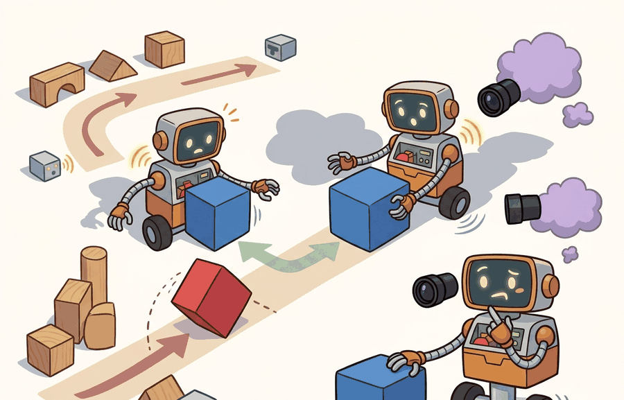

"Old experience is cheaper than new experience, right up until the policy has moved far enough that old experience is a lie."
A Replay Buffer Running Low on Trust

This section builds on the replay buffer mechanics introduced in section 16.2 and the twin-critic correction covered in section 16.3. The distribution-mismatch problem examined here reappears in section 20.2 in the context of sim-to-real transfer, and the conservative critic techniques that directly address off-policy overestimation are developed in section 25.3 on offline RL and dataset-based robot learning.
A robot arm trained with DDPG on a grasping task can hit 90% success in simulation, then collapse on the real hardware within minutes: the critic confidently assigns high value to recovery motions it has never actually seen, the actor chases that phantom signal, and the arm slams into joint limits. This failure is not a bug in the code; it is the fundamental cost of replaying old experience when your policy has moved on. Off-policy methods buy sample efficiency by reusing past transitions, but that bargain breaks the moment the current policy ventures into states the replay buffer barely visited. Understanding exactly where and why the bargain breaks, and which architectural choices close those gaps, is what separates deployed robot controllers from simulated ones.
For Sample efficiency and off-policy failure modes, off-policy learning depends on replay semantics, environment API, target computation, and GPU-scale batching being fixed before comparison with policy-gradient methods.
Sample efficiency is the promise of off-policy RL: learn more from each transition by reusing data. The danger is that reused data may come from a different policy, a different simulator condition, or a different phase of the robot's learning history.
This section develops the failure map. We distinguish useful reuse from distribution mismatch, show why off-policy correction can become high variance, and name the embodied cases where bootstrapping turns missing coverage into confident value errors.
A transition is useful only for the decisions the current policy must make. A million replay entries can still be thin evidence if they miss the object poses, contacts, recovery actions, or sensor failures that deployment will expose.
Theory
Off-policy learning trains a target policy using data collected by a behavior policy. If the behavior policy $\mu$ and target policy $\pi$ differ, an importance ratio can correct expectations in the simplest setting:
$$\rho_t = \frac{\pi(a_t|s_t)}{\mu(a_t|s_t)}$$
Large ratios mean the target policy strongly prefers an action that the behavior policy rarely took. That can reduce bias, but it increases variance. In long-horizon embodied tasks, multiplying many ratios can make estimates unusably noisy, so practical systems clip, truncate, or avoid explicit correction by using value-based bootstrapping.
In embodied AI, this matters because hardware time is finite: a physical robot cannot collect millions of samples to dilute the variance. A single high-ratio action, such as a recovery stroke the robot rarely attempted during collection, can dominate gradient updates and push the policy toward behaviors the hardware has never validated. On a real arm, that means joint-limit strikes or dropped objects before the correction signal arrives.
Mechanically, each logged transition contributes to the policy gradient weighted by its ratio. To estimate an expectation under the target policy using data collected under the behavior policy, each sample's contribution is scaled up or down proportionally to how much more or less likely the target policy is to choose that action in that state. Clipping the ratio at a threshold such as 2.0 limits how much any single transition can amplify the gradient, accepting a small bias to prevent a single rare-action mismatch from destabilizing the whole update.
Think of each importance ratio as a recipe scaling factor. Doubling one ingredient is manageable, but if you apply a separate doubling factor to every ingredient in a ten-step recipe, the final dish can be hundreds of times stronger than intended, even though each individual adjustment seemed modest. Long-horizon importance weighting works the same way: multiplying ten ratios of 2.0 each produces a combined weight of 1024, swamping every other transition in the batch. Clipping each ratio to 2.0 is like capping any single ingredient adjustment, keeping the dish edible even when the recipe has drifted far from the original.
Bootstrapping has its own failure mode. The critic can assign high value to state-action pairs that are out of distribution, because no transition in replay contradicts the estimate. This is confident extrapolation into the void: the model sounds certain exactly where the data is thin. A DDPG arm trained on 50,000 steps can reach 60% grasp success, then collapse to under 10% within 2,000 additional steps once the actor discovers those high-Q unsupported recovery actions, while TD3's twin-critic minimum on the same task holds steady through 200,000 steps without collapse.
Consider how this compounds in practice with DDPG on a robot arm task. Early in training the replay buffer holds mostly random motions, so the critic has no data for high-torque recovery strokes. The deterministic actor, following the gradient of the critic, drifts toward those strokes because the critic incorrectly assigns them high Q-values. The actor then generates those actions in the environment, which produces catastrophic failures, the failure transitions enter the replay buffer, and the critic receives a belated correction. TD3 addresses exactly this by using two critics and taking the minimum estimate, making it harder for a single optimistic critic to pull the actor off the data manifold. In embodied settings the cycle can run for thousands of steps before the correction arrives, because the robot's episode resets hide the accumulated overestimation from a naive return metric.
Q-overestimation is benign early in training when all estimates are rough, but it becomes catastrophic once the actor has learned to exploit the critic. The danger window is when the actor is competent enough to reach out-of-distribution states but the replay buffer has not yet covered them. Fujimoto et al. (2018) showed that in continuous control, DDPG's single critic produced Q-values several times the true return in this window, causing the policy to collapse. The twin-critic minimum in TD3 closes the window by requiring two independent overestimates to align before the actor can be misled.
In TD3, the policy_delay parameter (default: 2) controls how many critic updates run before each actor update, which is the primary lever for closing the overestimation danger window. On contact-rich manipulation tasks where the critic loss is still high variance early in training, raising policy_delay to 4 or 6 stabilizes learning by giving the critics more time to converge before the actor exploits them. If you observe the actor collapsing in the first 20,000 steps despite twin critics, check policy_delay before adjusting learning rate or batch size, because those changes address the wrong cause.
Off-policy methods trade fresh interaction for data reuse. The trade works when replay covers the target policy's decisions and fails when the current policy asks the critic about actions the behavior data barely visited.
Worked Example
Code Fragment 1 computes importance ratios for three logged actions. The third transition is dangerous because the target policy assigns high probability to an action that the behavior policy rarely selected.
# Compute off-policy correction ratios for logged actions.
# Large ratios identify target-policy decisions with weak behavior-policy support.
logged = [
{"action": "slow_push", "pi": 0.40, "mu": 0.50},
{"action": "lift", "pi": 0.20, "mu": 0.25},
{"action": "fast_recovery", "pi": 0.30, "mu": 0.03},
]
for row in logged:
ratio = row["pi"] / row["mu"]
clipped = min(ratio, 2.0)
print(row["action"], f"rho={ratio:.1f}", f"clipped={clipped:.1f}")The expected output shows mild correction for the first two logged actions and an extreme mismatch for fast_recovery. A ratio of 10.0 means the target policy wants that action far more often than the behavior policy ever demonstrated it, so clipping to 2.0 is a variance-control patch, not proof of support.
fast_recovery has an importance ratio of 10.0 because pi is much larger than mu. Clipping the ratio reduces variance, but it also records that the replay data gives weak evidence for the action the target policy now wants.In an embodied dataset, that weak evidence is not an abstract statistical problem. It may mean the robot almost never attempted the emergency recovery motion during collection, yet the learned policy now depends on it during deployment.
Libraries can handle replay, batching, and algorithm updates, but they cannot decide whether the data covers the current policy's decisions. For off-policy experiments, add coverage reports, behavior-policy tags, and condition labels to the artifact even when the trainer is fully managed by Stable-Baselines3, Tianshou, or CleanRL.
Practical Recipe
- Define sample efficiency as grasp success or navigation success per real robot interaction or MuJoCo step, not per gradient update. A TD3 run that needs 200,000 gradient updates from 50,000 simulator steps and 0 real Franka Panda steps is in a completely different data regime from a SAC run using 5,000 real steps collected on a Spot quadruped.
- Tag every replay batch with the behavior policy checkpoint, the simulator randomization range (friction coefficient, object mass, sensor noise sigma), and the wall-clock timestamp. When reusing Open X-Embodiment or RT-X logs alongside freshly collected transitions, store the source dataset name and robot embodiment as mandatory fields so stale entries can be filtered if the new policy's morphology diverges.
- Measure policy-data mismatch concretely: for a 7-DOF manipulation policy, compute action coverage in joint-torque space and flag any torque range in the target policy that fewer than 50 replay transitions sampled. For a wheeled robot, flag heading changes steeper than anything in the logged trajectories.
- Track twin-critic disagreement ($|\Delta Q| = |Q_{\phi_1} - Q_{\phi_2}|$) specifically on contact-transition states, because those are where extrapolation error is largest. In IsaacGym or MuJoCo, log $|\Delta Q|$ at the moment the gripper closes or the foot strikes the ground; spikes there predict real-world collapse before the return curve shows it.
- Report failure modes by the physical distribution that shifted: proprioceptive observation shift (joint encoder drift on a real Franka versus a simulated one), action shift (torque limits that differ between sim and hardware), dynamics shift (contact stiffness mismatch), reward shift (force-torque sensor miscalibration changing the grasp-success signal), or termination shift (safety stop triggering earlier on the real arm than the simulator reset threshold).
Algorithm: Off-Policy Coverage Audit
Input: replay buffer $\mathcal{D}$ with behavior policy tags $\mu$, current target policy $\pi_\theta$, critic $Q_\phi$, importance-ratio clip threshold $c$, coverage threshold $\tau$
Output: coverage verdict (SAFE / WARN / BLOCK) and per-action support report
- For each candidate action $a$ in the target policy's action distribution, retrieve all replay transitions $(s, a', r, s') \in \mathcal{D}$ where $a'$ is within distance $\delta$ of $a$.
- Compute the importance ratio $\rho(s, a) = \pi_\theta(a \mid s) / \mu(a \mid s)$ for each logged transition that covers $a$.
- Clip the ratio: $\hat\rho = \min(\rho, c)$. Flag any action where the raw ratio exceeds $c$ as a weak-support candidate.
- Compute the empirical support count $N(a) = |\{(s, a', r, s') \in \mathcal{D} : \|a' - a\| \le \delta\}|$. If $N(a) < \tau$, add $a$ to the unsupported action set $\mathcal{U}$.
- Estimate critic uncertainty for each unsupported action: record $\Delta Q(s, a) = Q_{\phi_1}(s, a) - Q_{\phi_2}(s, a)$ using the twin critics. Large $|\Delta Q|$ indicates extrapolation error.
- Classify each action: SAFE if $\rho \le c$ and $N(a) \ge \tau$; WARN if $\rho > c$ but $N(a) \ge \tau$; BLOCK if $a \in \mathcal{U}$ or $|\Delta Q|$ exceeds a preset threshold $\epsilon$.
- If any action is BLOCK, pause actor gradient updates and increase $\text{policy\_delay}$ by one until the replay buffer accumulates $\tau$ supporting transitions for the blocked action.
- Record the support report (action label, $\rho$, $\hat\rho$, $N(a)$, $\Delta Q$, verdict) as one row in the sample-efficiency audit artifact alongside return and gradient-update counts.
- If all actions are SAFE or WARN, resume normal training; return the aggregate verdict as the weakest classification across all candidate actions.
The common mistake is to report fewer environment steps without reporting coverage. A method can look sample efficient because it reuses data aggressively, while the learned critic is extrapolating over actions and states the robot never actually visited.
Students often assume that growing the replay buffer solves off-policy distribution mismatch: if you store more transitions, surely the current policy's decisions will be covered. This is wrong in embodied AI because coverage is determined by which states and actions the behavior policy actually visited, not by how many transitions you retain. A buffer of one million entries collected by an early random policy still has zero coverage for the recovery motions a mature policy needs after contact disturbances. The correct mental model is that replay buffer size controls how long old experience persists, while behavior-policy diversity controls whether the right regions of state-action space were ever sampled at all. These are independent dimensions, and only the second one closes the off-policy gap.
A fleet-learning project may reuse thousands of delivery-robot logs. That is valuable only if the logs cover the new policy's turns, speeds, obstacle types, lighting conditions, and recovery maneuvers. Otherwise off-policy learning becomes confident imitation of yesterday's easy routes plus speculation about today's hard ones.
A good embodied system makes sample efficiency and off-policy failure modes visible twice: once in the design sketch and once in the replay artifact. The second view keeps the first one honest.
Research on offline RL, conservative critics, uncertainty-aware value learning, and dataset curation all targets the same embodied problem: how to learn from fixed or mixed-policy data without trusting unsupported actions. The central open question is how to turn coverage diagnostics into reliable deployment decisions.
Can you state the behavior policy, target policy, replay coverage, correction rule, and critic diagnostic for a sample-efficiency claim? If not, the claim is missing the evidence needed to interpret it.
Sample efficiency has to be construct-matched. If method A uses 10,000 real robot steps and method B uses 10,000 simulator steps plus a million logged transitions, the comparison is not a single sample-efficiency number. It is a data-regime comparison that must report every source of experience.
Off-policy failure analysis starts by asking which distribution changed. Observation shift changes what the encoder sees. Action shift changes which controls the critic must evaluate. Dynamics shift changes the consequence of the same action. Reward shift changes which behavior the value function calls good. Termination shift changes which failures are hidden by early episode endings.
| Tool or Library | Role in the Topic | Builder Advice |
|---|---|---|
| Offline logs | Behavior-policy evidence | Use them only with policy tags, condition labels, and action-support summaries. |
| CleanRL | Inspectable training loop | Use it to verify which environment steps, replay samples, and gradient steps are counted. |
| Tianshou | Collector and replay controls | Use it to keep collection policy, replay sampling, and evaluation policy explicit. |
| MuJoCo | Controlled shift panel | Use it to generate matched dynamics perturbations for coverage and failure analysis. |
| ROS 2 bags | Real deployment traces | Use them to audit whether real observations and actions match the simulator-trained distribution. |
A robust off-policy implementation records data provenance, not only return. Code Fragment 2 builds one artifact row that ties a sample-efficiency claim to the exact interaction and replay counts behind it.
- Count real environment steps, simulator steps, replayed transitions, and gradient updates separately.
- Store behavior-policy tags for every replay source.
- Report action-support warnings for target-policy actions with weak coverage.
- Evaluate the current policy on a fixed perturbation panel, not on replay alone.
- Keep negative diagnostics in the registry even when only significant wins enter the paper tables.
# Build one sample-efficiency audit record.
# Separating data sources prevents invalid apples-to-oranges comparisons.
from dataclasses import dataclass, asdict
@dataclass
class SampleEfficiencyAudit:
algorithm: str
real_steps: int
sim_steps: int
replay_samples: int
gradient_updates: int
weak_action_support: str
evaluation_panel: str
def as_row(self) -> dict[str, object]:
return asdict(self)
record = SampleEfficiencyAudit(
algorithm="TD3",
real_steps=0,
sim_steps=50000,
replay_samples=1000000,
gradient_updates=200000,
weak_action_support="fast_recovery torque range",
evaluation_panel="mass_friction_delay_v1",
)
print(record.as_row())The expected output should be read as an accounting record, not a performance claim. It says this result used only simulator interaction, extremely heavy replay reuse, and still has a named weak-support region, so any sample-efficiency comparison must keep those data sources and support warnings attached to the score.
SampleEfficiencyAudit separates real steps, simulator steps, replay samples, and gradient updates. The weak_action_support field records where off-policy reuse is most likely to produce extrapolation error.When an off-policy method fails, do not start by blaming the algorithm name. First identify whether the bad value came from behavior-policy mismatch, missing action support, stale dynamics, reward mislabeling, termination bias, or critic extrapolation. Then rerun one matched perturbation panel with coverage diagnostics enabled.
For sample-efficiency claims, compare only metrics co-computed in one pass on one data accounting scheme: same environment panel, same policy checkpoint, same seed set, same perturbation suite, and the same definitions of real steps, simulator steps, replay samples, and gradient updates. Save the coverage diagnostics with the result table.
Off-policy learning is valuable because it reuses expensive embodied experience. It is trustworthy only when data provenance, coverage, correction, and bootstrapping diagnostics explain why reuse applies to the current policy.
Design a sample-efficiency table for two off-policy methods. Include real steps, simulator steps, replay samples, gradient updates, success, one safety metric, and one coverage warning that would block a strong claim.
Project Ideas
Beginner (weekend): Importance-ratio visualizer in Gymnasium. Build a CartPole-v1 training loop using CleanRL's SAC implementation and log the per-transition importance ratio between a frozen behavior policy checkpoint and the live target policy at every replay sample; plot the ratio distribution over training to see when and where dangerous high-ratio regions appear. The key challenge is correctly extracting log-probabilities from the stochastic actor so ratios are computed under the same action parameterization that was used during collection.
Intermediate (1-2 weeks): Off-policy coverage auditor for a MuJoCo manipulation task. Train a TD3 agent on the MuJoCo FetchPickAndPlace-v2 environment using Tianshou, implement the coverage audit algorithm from this section (twin-critic disagreement logged at gripper-close transitions, action-support count per torque bin), and surface a per-episode SAFE/WARN/BLOCK verdict in a live dashboard. The key challenge is binning the 7-DOF joint-torque action space finely enough to catch real coverage gaps without making the audit so slow it blocks training throughput.
Intermediate (1-2 weeks): Sim-to-real replay mismatch detector with ROS2 bags. Collect 30 minutes of real robot arm trajectories via ROS2 bag files on a low-cost manipulator (or a PyBullet surrogate), merge them into a replay buffer alongside MuJoCo-simulated transitions tagged by source, and train a classifier to predict which buffer source each transition came from; high classifier accuracy on held-out transitions quantifies the distributional gap that off-policy methods must bridge. The key challenge is aligning observation spaces between the ROS2 joint-state messages and the MuJoCo state vector so the classifier sees a fair comparison rather than trivial format differences.
What's Next?
This section turned sample efficiency and off-policy failure modes into a testable embodied-learning contract: define the loop, choose the tool, save one comparable artifact, and diagnose failure by interface. Next, continue with Chapter 16, where the same evaluation habit carries into the next reinforcement-learning decision.
Watkins, C. J. C. H., and Dayan, P. (1992). Q-learning. Machine Learning.
The canonical derivation of tabular Q-learning and its convergence proof. Read to understand the off-policy update rule and why the max over next-state actions makes Q-learning off-policy by construction; this distinction carries through to DQN and all its successors.
Mnih, V. et al. (2015). Human-level control through deep reinforcement learning. Nature.
Demonstrates that replay buffers and target networks together stabilize Q-learning with neural function approximators. Read Section 2 for the DQN algorithm and the supplementary for network architecture; replay and target-network ideas appear in every subsequent off-policy deep RL method including DDPG, TD3, and SAC.
Lillicrap, T. P. et al. (2015). Continuous control with deep reinforcement learning. arXiv.
Adapts DQN to continuous action spaces by combining a deterministic policy gradient actor with a Q-function critic and using replay and target networks from DQN. Read Algorithm 1 for the full update loop; DDPG is the direct predecessor to TD3 and understanding its overestimation problem motivates TD3's twin-critic design.
Identifies and fixes the Q-value overestimation problem in DDPG through three mechanisms: clipped double critics, delayed policy updates, and target-policy smoothing. Read Section 4 for each fix and the ablation in Section 5; these three tricks are now standard practice for off-policy continuous-control and appear directly in SAC variants.
Haarnoja, T. et al. (2018). Soft Actor-Critic. ICML.
Combines off-policy learning with a maximum-entropy objective, adding an automatic temperature parameter that balances exploration and exploitation without manual tuning. Read Section 4 for the soft Bellman equation and the entropy temperature update; SAC is the most widely used off-policy baseline for continuous robot control tasks.
A modular PyTorch RL library with clean separation between collector, trainer, and policy components. Use it to prototype off-policy algorithms without reimplementing replay buffers and target-network logic; the policy abstraction makes it straightforward to compare DQN, DDPG, TD3, and SAC in a common framework.